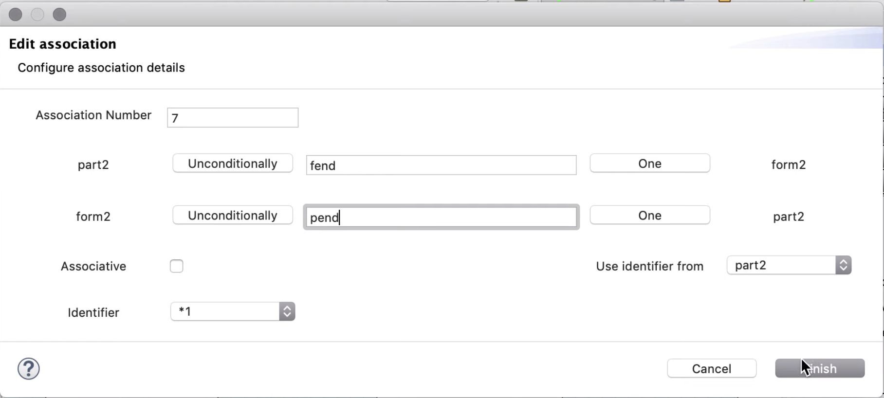
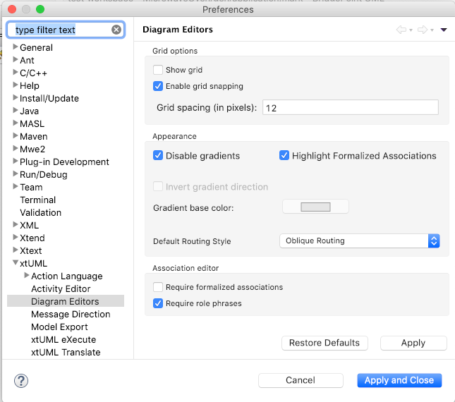

Release Highlights
-
Association editor
-
Engineering build
Deployments
Association Editor
A new association editor is added to BridgePoint UML Editor. It allows the user to populate the details of a relationship as the association is drawn on the canvas. The editor supports automatic formalization as well as configuration of referentials, role phrases, conditionality, and multiplicity.

Figure 1. Association Editor
Workspace preferences are available to adjust default behavior of the new editor.

Figure 2. Association Editor Preferences